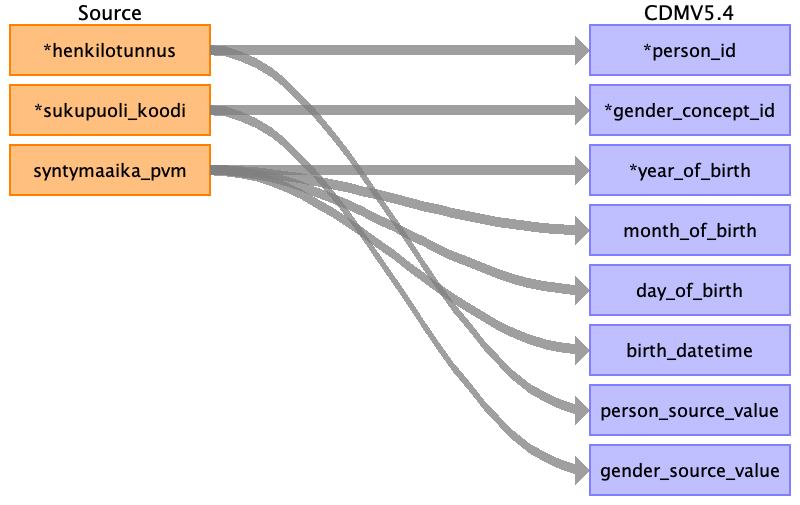

Table name: person
Reading from all_asiakas
Include all persons from ALL_ASIAKAS that can be found in the mapping table, have been born, and are not in ALL_EXCLUDE_PATIENTS. There might be several updates for person's data. Use the latest one.

| Destination Field | Source field | Logic | Comment field |
|---|---|---|---|
| person_id | henkilotunnus | Join to the mapping table with the connected field to find person_id. | |
| gender_concept_id | sukupuoli_koodi | If sukupuoli_koodi = 1, then use 8507 Male, if sukupuoli_koodi = 2, then use 8532 Female, else use 0. | |
| year_of_birth | syntymaaika_pvm | Use the connected field. | |
| month_of_birth | syntymaaika_pvm | Use the connected field. | |
| day_of_birth | syntymaaika_pvm | Use the connected field. | |
| birth_datetime | syntymaaika_pvm | Use the connected field. | |
| race_concept_id | Use 0. | ||
| ethnicity_concept_id | Use 0. | ||
| location_id | Use NULL. | ||
| provider_id | Use NULL. | ||
| care_site_id | Use NULL. | ||
| person_source_value | henkilotunnus | Use the connected field as is. | |
| gender_source_value | sukupuoli_koodi | Use the connected field as is. | |
| gender_source_concept_id | Use 0. | ||
| race_source_value | Use NULL. | ||
| race_source_concept_id | Use NULL. | ||
| ethnicity_source_value | Use NULL. | ||
| ethnicity_source_concept_id | Use NULL. |
Reading from all_exclude_patients
Include all persons from ALL_ASIAKAS that can be found in the mapping table, have been born, and are not in ALL_EXCLUDE_PATIENTS. There might be several updates for person's data. Use the latest one.

| Destination Field | Source field | Logic | Comment field |
|---|---|---|---|
| person_id | Join to the mapping table with the connected field to find person_id. | ||
| gender_concept_id | If sukupuoli_koodi = 1, then use 8507 Male, if sukupuoli_koodi = 2, then use 8532 Female, else use 0. | ||
| year_of_birth | Use the connected field. | ||
| month_of_birth | Use the connected field. | ||
| day_of_birth | Use the connected field. | ||
| birth_datetime | Use the connected field. | ||
| race_concept_id | Use 0. | ||
| ethnicity_concept_id | Use 0. | ||
| location_id | Use NULL. | ||
| provider_id | Use NULL. | ||
| care_site_id | Use NULL. | ||
| person_source_value | Use the connected field as is. | ||
| gender_source_value | Use the connected field as is. | ||
| gender_source_concept_id | Use 0. | ||
| race_source_value | Use NULL. | ||
| race_source_concept_id | Use NULL. | ||
| ethnicity_source_value | Use NULL. | ||
| ethnicity_source_concept_id | Use NULL. |